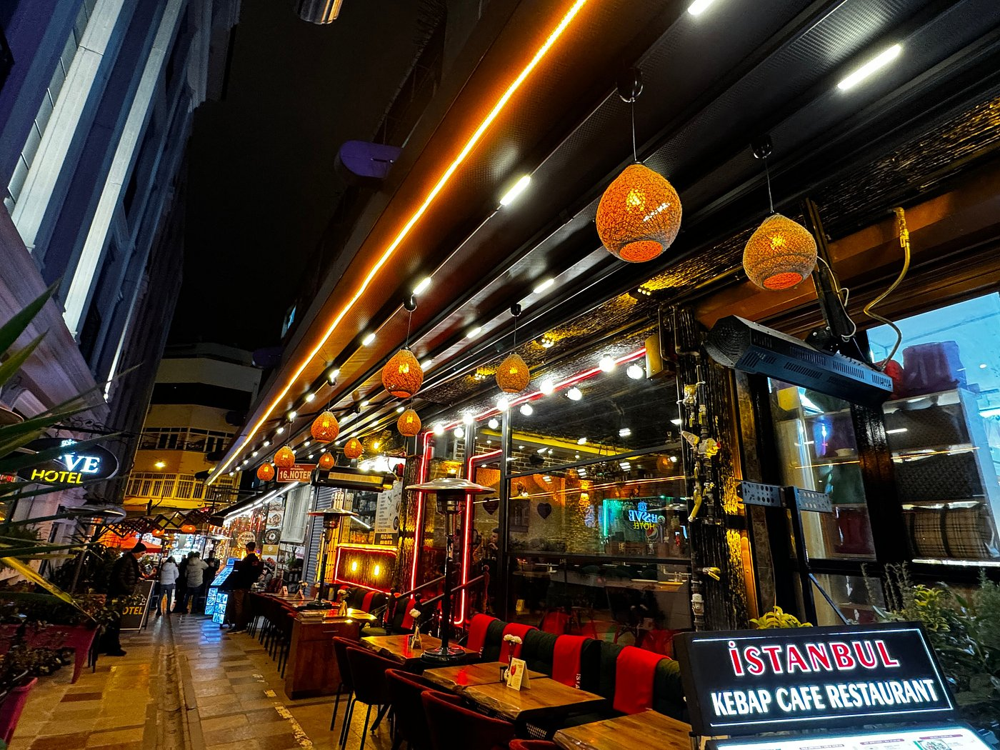
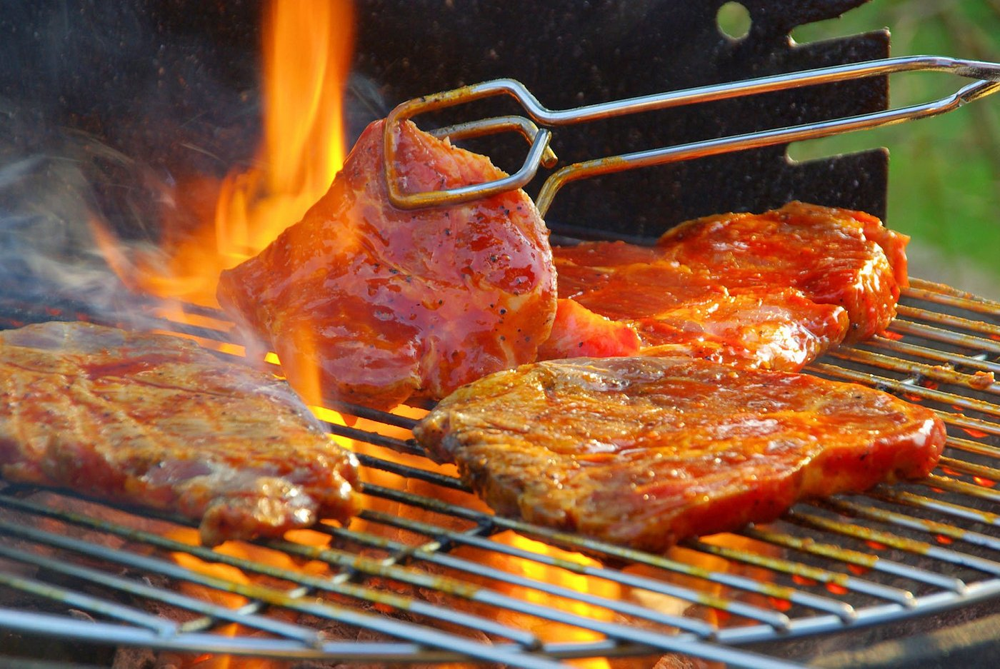

TÜRKEY
THE BEST RESTAURANTS
Why we advise you to visit the city of ISTANBUL
Istanbul is a beautiful city with lots of tourist places, lots of things to discover
here is a presentation of the city of ISTANBUL
THE BEST RESTAURANT IN ISTANBUL: Byzantion Bistro Restaurant
Byzantion Bistro Restaurant introduces customers to the taste of Ottoman palace cuisine with years of experiences. They serve the unique tastes that were presented between the 14th and 18th centuries, which had almost forgotten. They are ready to welcome you with a cuisine where fruits are used instead of tomatoes, corn, potatoes to flavor all foods. They also serve the most popular Turkish and international dishes in the world. Pomegranate flower sorbet. Stuffed melon, sour cherry stuffed grape leaves and levzine are just a few options from Ottoman Palace cuisine. Byzantion Bistro restaurant, Turkish and Ottoman cuisine, is located near Aksaray tram station, with capacity. 120 people inside and 30 people per side of the garden.
KITCHENS
Italian, Steakhouse, Seafood, Barbecue, Turkish, Healthy, Cantonese, Central European, Neapolitan, Emilian, Campania, Sicilian, Lombard, Ligurian, Northern Italian, Southern Italian
SPECIAL DIETS
Vegetarian Friendly, Vegan Options, Halal, Gluten Free Options
MEAL
Breakfast, Lunch, Dinner, Brunch, Drinks
FEATURES
Takeout, Reservations, Terrace, Private Room, Seating, Valet Parking, Television, Highchairs Available, Wheelchair Accessible, Serves Alcohol, Full Bar, Beer & Wine, Mastercard Accepted, Visa Accepted, Wi-Fi Free WiFi, Credit cards accepted, Table service, Family style
- Currencies used: euro
- Location: Kemal Paşa, Ordu Cad, Yeşil Tulumba Sk. No:9/1 Laleli, Istanbul 34134 Turkey
- Tel : +90 212 522 74 96
- Site web
- Hours: Monday to Sunday: 11:00 a.m. to 11:00 p.m.
- Menu
- PRICE RANGE 7€-20€

For more information, click here
opinions of other travelers about the restaurant
OTHER BEST RESTAURANT IN ISTANBUL: Hidden Garden
Lunch & Dinner
One of the richest cuisines in the world. They looked at the traditions of the places the Turks went to during their migration from Central Asia. While the Seljuks and Ottomans preserved their old culinary habits, they were also influenced by the new ethnic and religious food cultures in Anatolia. Hidden Garden Restaurant remains true to this cultural heritage. It brings you together with these rich culinary delights.

Pour plus d'informations cliquer ici
You can also visit other popular restaurants visited by other tourists like:
Read moresother Best Restaurant
Istanbul Kebab Cafe & Restaurant
Seafood and fish, Mediterranean, Barbecue/Grill, Middle Eastern
SPECIAL DIETS
Vegetarian Friendly, Vegan Options, Halal, Gluten Free Options
MEAL
Breakfast, Lunch, Open late,, Brunch, Drinks
FEATURES
Takeout, Reservations, Terrace, Seating, Serves Alcohol, Full Bar, Beer & Wine, Electronic Payments, Free WiFi, Credit Cards Accepted, Table Service
treat yourself by visiting this restaurant with better dishes and a good welcome
Read mores